9:415G
우리사이 미리보기
예시 추억으로 둘러보고 있어요.
우리사이
아직 추억이 없어요
최근 함께한 순간을 사진 한 장이나 짧은 이야기로 남겨 보세요.
최근 함께한 추억
{{ hero.title }}
{{ hero.meta }}
{{ hero.nw }}
다가오는 약속
{{ p.monthLabel }}
{{ p.dayNum }}
{{ p.title }}
{{ p.timeText }} · {{ p.placeText }}
{{ p.goingText }}
내 응답{{ p.myLabel }}
내가 만든 약속
{{ p.changeDetail }}
함께 기록하자는 초대
우리의 발자국
{{ footSummary }}
함께 다녀온 날을,
한 곳에 같이 모아요
각자 찍은 사진과 이야기가 하나의 추억이 돼요.
{{ hero.title }}
4명이 남긴 사진 {{ hero.ph }}장 · 이야기 {{ hero.st }}개
 {{ t.by }}
{{ t.by }}
추억
{{ resultCount }}
{{ m.title }}
{{ m.meta }}
조건에 맞는 추억이 없어요
사람이나 기간, 지역 조건을 바꿔 보세요.
{{ sp.name }}
{{ sp.meta }}
아직 우리 공간이 없어요
자주 함께하는 친구들과 공간을 만들면, 같이 쓰는 추억을 한곳에서 볼 수 있어요. 공간에 연결해도 추억은 직접 초대한 사람만 볼 수 있어요.
{{ dayTitle }}
{{ dayEmptyText }}
우리의 발자국
{{ footLead }}

추억이 있는 지역{{ mapRegionCount }}곳
아직 해외에 남긴 발자국이 없어요
해외에서 함께한 추억을 기록하면 이곳에서 다시 만날 수 있어요.
{{ footEmptyText }}
발자국은 추억을 볼 수 있는 사람에게만 보여요.
나
서연
2026년 3월부터 기록 중
{{ s.label }}
{{ s.value }}
나
로그인하면 내 기록이 여기에 모여요
추억과 발자국을 안전하게 보관하고, 함께한 사람을 초대할 수 있어요.
{{ cur.focusAuthor }}사진으로 남긴 순간
{{ cur.focusStory }}
이 사진에서 떠오르는 기억을 먼저 남겨보세요.
내 사진과 이야기를 더해 하나의 추억으로 모아보세요.
{{ cur.title }}
{{ c.pos }} / {{ c.count }}
{{ c.text }}
기록된 지역
{{ footListSummary }}
아직 기록된 지역이 없어요.
연결된 추억
{{ footListSummary }}
이 조건에 해당하는 추억이 아직 없어요.
{{ region.path }}
{{ region.sub }}이곳의 추억
우리사이
{{ loginTitle }}
{{ loginBody }}
또는
새 추억 만들기
사진 한 장이나 짧은 이야기로 시작해도 좋아요.
어느 쪽으로 시작해도 같은 추억이 돼요. 사진과 이야기는 나중에 더할 수 있어요.
사진 고르기 {{ pickNote }}

대표
함께한 사람 (선택)
{{ cPeopleCount }}명 선택
이 추억에 함께한 친구를 선택해 주세요.
선택한 친구가 없어요.
아직 연결된 친구가 없어요. 친구와 연결되면 함께한 사람으로 선택할 수 있어요.
지역
데모 · {{ pl.asName }}님 시점으로 보고 있어요
{{ pl.title }}
내 참석 여부
{{ pl.rsvpNote }}참석 현황
{{ pl.summary }}메모
{{ pl.memo }}
이 약속으로 남긴 추억
데모 · 초대받은 사람 시점으로 보기
고른 사람으로 참석 여부를 바꿔 볼 수 있어요.
{{ sp.name }}
멤버 {{ sp.count }}명
볼 수 있는 추억 {{ sp.memCount }}개
공간 멤버라도 초대받은 추억만 볼 수 있어요. 이 목록에는 내가 볼 수 있는 추억만 보여요.{{ spHeading }}
자주 함께하는 친구들을 한곳에 묶어 둬요.
함께할 친구 (선택)
{{ pfHeading }}
약속은 추억과 따로 보관돼요. 만난 뒤에 그날을 추억으로 이어 남길 수 있어요.
시간
장소
공간만 사라지고, 연결된 추억은 그대로 남아요.
함께한 친구 선택{{ cPeopleDraftCount }}명 선택
검색 결과가 없어요.
다른 이름으로 검색해 보세요.
{{ prompt.body }}
검색 결과가 없어요.
추억 {{ regionPeek.count }}개
댓글 {{ threadCommentCount }}개초대된 사람만 볼 수 있어요
{{ c.by }}{{ c.at }}
{{ c.text }}
이 사진에서 떠오르는 기억을
먼저 남겨보세요.
{{ threadInputLabel }}
같은 날의 사진과 이야기를 함께 남겨보세요.
{{ pvCount }}
{{ pvNote }}
{{ confirmNote }}
초대한 사람에게 취소 사실을 알려요. 취소한 약속은 달력에 ‘취소됨’으로 남고, 추억으로 남길 수 없어요.
{{ viewer.by }}
{{ viewer.scopeLabel }} · {{ viewer.pos }} / {{ viewer.count }}
두 번 탭하거나 두 손가락으로 확대해요